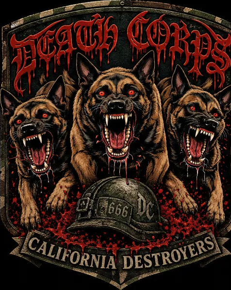
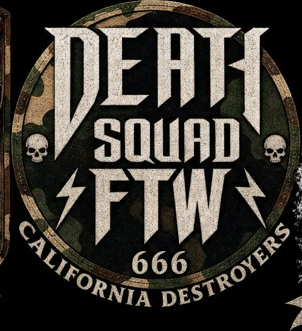
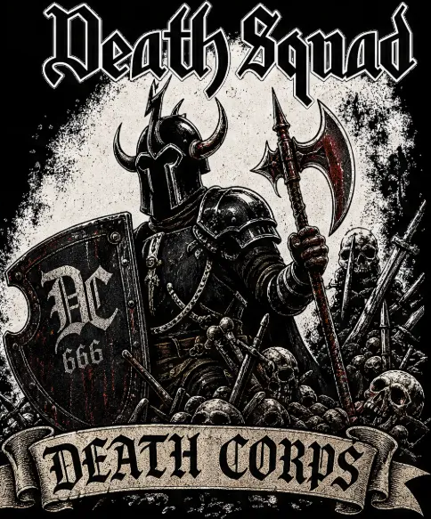
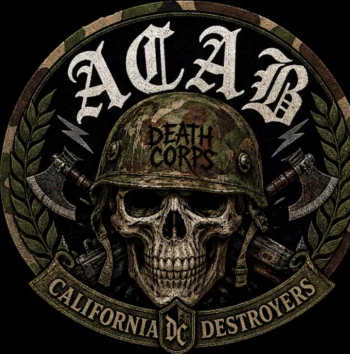
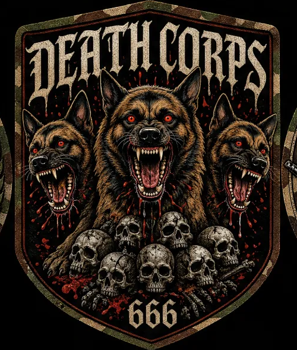
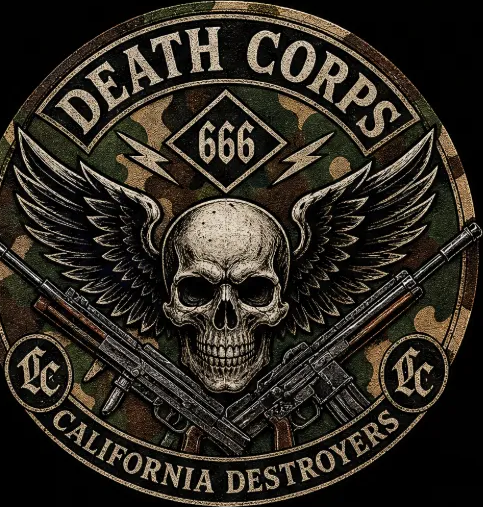

California Destroyers · Six marks
Sliced out of the contact sheet at native resolution and trimmed to the art, so each mark is its own asset. They read as one family: camo ground, aged print, bone and blood on near-black, the 666, the DC monogram, and the CALIFORNIA DESTROYERS banner carrying the bottom of nearly every one.

Dripping blackletter, Malinois trio, DC helmet. The strongest of the six.

Type-only. Condensed metal caps, bolts, two small skulls.

The outlier: white blast ground instead of camo.

Blackletter head, laurel wreath, crossed axes and rifles.

The dog trio again, skull pile instead of helmet. Reads as a pair with the first.

Cleanest lockup of the six. Reads smallest, so it survives shrinking best.
These crops came out of a 1500 × 1500 sheet, so each mark is roughly 500 px across. That is about 1.6 inches at 300 dpi — a hat patch and nothing larger. Every number above is measured, not estimated.
| Use | Needs at 300 dpi | These give you |
|---|---|---|
| Hat / sleeve patch, 2″ | 600 px | Workable |
| Left chest, 4″ | 1200 px | Short by half |
| Back patch, 10″ | 3000 px | Short by 6× |
| Full shirt front, 12″ | 3600 px | Short by 7× |
So keep whatever your model wrote out before it built the sheet. If it only ever emitted the sheet, re-run the keepers one at a time at the largest size the model allows — upscaling a 500 px crop invents fur and lettering that was never there, and it shows worst in exactly the places these designs live: the dog coats, the drip edges, and the thin bone type in the banners.